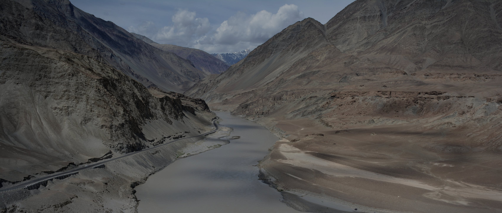

Industries · Autonomous Vehicles
PhoQtek Labs develops navigation-relevant visual, inertial, and sensor-fusion technologies for autonomous mobility platforms operating in GNSS-degraded or GNSS-obstructed environments.
This page does not claim certified autonomous vehicle navigation or safety-certified autonomy. Performance is application-specific.